As a default, Process Director will return a maximum of 200 rows in a recordset. This default value can be changed by setting the nMaxBusinessValueRows Custom Variable in the customization file.
As a default, Process Director will return a maximum of 200 rows in a recordset. This default value can be changed by setting the nMaxBusinessValueRows Custom Variable in the customization file.Process Director enables implementers to retrieve and manipulate data from external sources, such as HR, ERP, or CRM systems, without requiring implementers "to know technical details about the data, such as how it is formatted or where it is physically located", a technique known as Data Virtualization.
At any given moment there may be hundreds, thousands, even millions of processes underway in your organization, each of them depending on business data. For those processes—many of which operate in the form of custom business applications—to succeed, the information they access must be up-to-date and accurate. Such information may be generated in the course of the process itself (for example: the item(s) the customer is ordering), or may be found in the company’s systems of record (for example: the customer’s outstanding invoice(s)). The data stored in the systems of record thus become a vital component of the applications that facilitate all of the organization’s business activities. Such applications are often referred to as systems of engagement, because they enable employees, customers, and others to engage directly in the business at hand.
It’s clear, then, that systems of engagement, such as business applications, need a way to exchange information with systems of record. And yet, if your business applications are being built by citizen developers, it may not be easy for those individuals to access and manipulate such data. After all, systems of record, databases, and external data sources (such as web services) are complex: extracting data from them often requires detailed technical knowledge of query mechanisms, APIs, or programming languages.
Process Director addresses these issues by separating the details of accessing systems of record from using the resulting data within a business application. As a result, technical experts can configure the appropriate access mechanism once, and implementers can reuse the information provided anywhere at all within the application, without having to know or understand how the information was obtained. An implementer may also, on occasion, create a business value that references only internal data from Process Director, such as a calculation based on a knowledge View. In either case, once configured, a Business Value is universally available to implementers.
A fundamental advantage of using a Business Value is that any changes to how the Business Value is derived are transparent—and largely irrelevant—to the implementer. If the organization changes to a different CRM or HR system the Business Value can be reconfigured to use data from the new system without implementers having to make changes to existing processes.
A Business Value can extract a single value, or a list of values such as those in a database table. In the context of a Form, for example, a Business Value can be used to fill out a form Array with a recordset from an external database.
As a default, Process Director will return a maximum of 200 rows in a recordset. This default value can be changed by setting the nMaxBusinessValueRows Custom Variable in the customization file.An even more powerful way of using Business Values is to use parameters to return values dynamically for use in your processes. Previously, instead of a Business Value, you would need to create a Custom Task step in your process, or Use a custom task in a Form, to return data values to fill fields. As a result, you might have several Custom Tasks, spread out among several projects, all of which were essentially configured exactly the same. Any change to the database schema, would require making changes to every single one of those Custom Tasks, making updates tedious, and costly in terms of time and effort. While there are certainly times that a database Custom Task will still be needed, the Business Value can replace a Custom task in many use cases.
Let's take a look at a hypothetical case. We will assume that we have a database table that stores customer information. We can create a Business Value to provide that information. Let's look at how such a Business value might be configured.

The SQL Command for this Business Value retrieves records for active customers. If no "CustomerID" parameter is supplied, the command will simply pull every customer record. If the "CustomerID" parameter is supplied, Business Value will return only a single record. In other words, the same Business Value can return a single or scalar value based on the parameter.
Next, the Business Value uses the database columns to create three properties: the Name, ID, and Type properties will all contain values extracted from the database, In addition, since the business rule automatically knows how many records have been returned by the SQL Command, the fourth property, Count, will contain the number of records returned.
 When a Business Value Property returns no data from a SQL command, it can still be used in a condition, because the value will be set to an empty string, allowing comparisons in the conditions to work correctly.
When a Business Value Property returns no data from a SQL command, it can still be used in a condition, because the value will be set to an empty string, allowing comparisons in the conditions to work correctly.Once we have created the Business Value, it's accessible by all other objects in Process Director. None of your business users or other implementers need to know anything about how the data is configured to use the business value, because the Business Value properties are available through the condition builder dropdowns. They merely need to select the properties they want, which means that, in most cases, implementers no longer need to create a Custom Task to retrieve the data. They no longer need to know or care about the database schema or the SQL syntax to retrieve the data they want. This functionality greatly reduces the level of technical knowledge that business users and implementers need to conduct relatively sophisticated data retrieval operations. With Business Values, technical details about the data, and how to acquire it, is largely irrelevant to implementers. The only person who needs to have any sort of technical knowledge about the database is the creator of the Business Value itself.
Combined with the scheduling and process initiation available in the Goals feature, Process Director is a powerful workflow automation system, enabling automatic workflow initialization based on data from external systems.Another function available for business values is the ability to perform mathematical operations on a database or Knowledge View column. When retrieving any numeric column data, Process Director can perform the following calculations on the values:
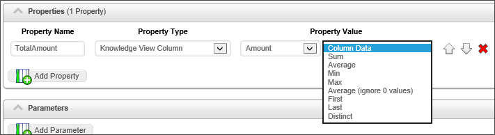
To create a new Business Value, navigate to the folder into which you want to create the value, then select "Business Value" from the Create New dropdown in the upper right corner of the Process Director Screen.
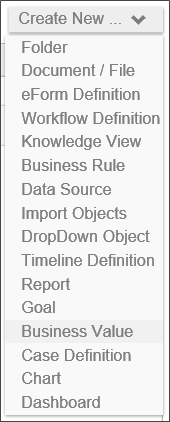
The Create Business Value screen will appear. Enter a name in the Business Value Name field, then click the OK button to save the new Business Value and open the configuration screen.
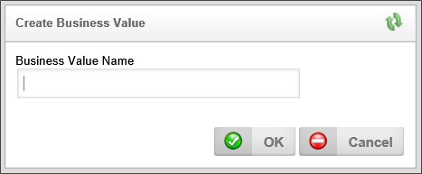
There are a number of configuration tabs on the Business Value screen that are used to configure the Business Value.
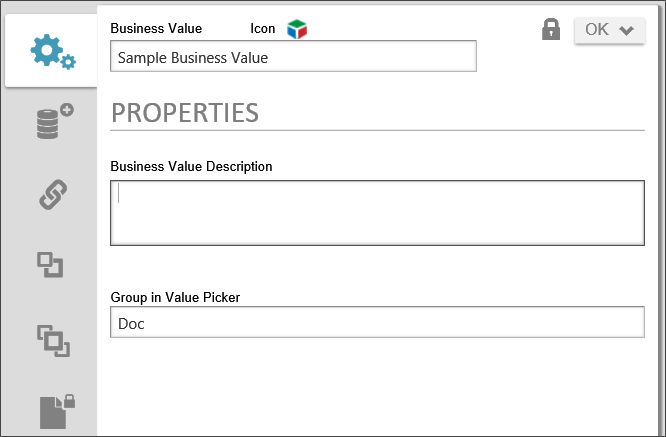
The detailed description of the Business Value's purpose, data sources, etc.
The name of the group under which the Business Value's name will be displayed in dropdown menus. This property enables you to organize Business Values into logical groups that will display as submenus in the properties dropdown menus that display in the Condition builder and elsewhere. This feature operates in the same way as it does for Business Rules.
The Configure Tab shows the general properties that apply to the Business Value.
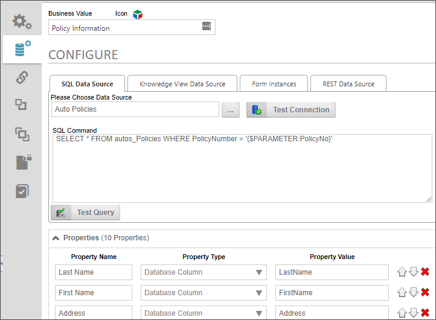
You can select a data source from a SQL database, a Knowledge View, or REST web service to provide the Business Value. In most cases, you will choose a single data source, but you can have multiple values extracted from both a SQL and a Knowledge View data source.
The SQL Data Source tab enables you to select a SQL Data Source, and provide a SQL Command for returning data from a SQL database. The Business Value supports most SQL data types (Char, Varchar, Nvarchar, Integer, Double, Short, Byte), and converts the value to a string for the remaining data types.
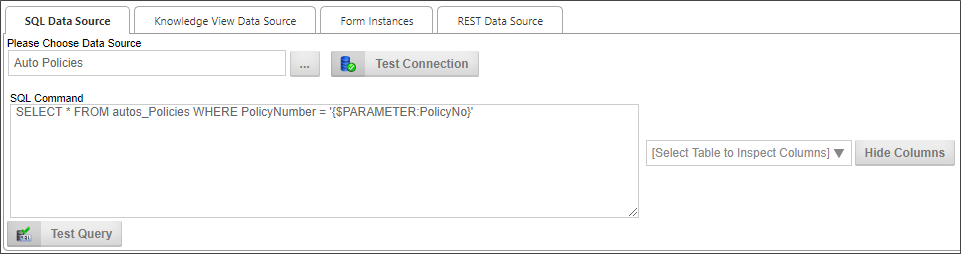
A Content Picker control that enables you to pick the Datasource from which the data will be extracted.
Clicking this button will attempt to connect to the selected data source to confirm that the connection to the Datasource works.
Once a valid Datasource has been selected, a list of database tables associated with the datasource will fill the dropdown. If you select a table from the dropdown, a list of table columns will appear on the right side of the SQL Command text box, in the Database Column field.
Enter the SQL command that will select the data to be set as the business value.
While the system will accept any valid SQL command, BP Logix very strongly recommends that you limit the use of Business Values to SELECT commands. Updating, deleting, and inserting data should be done separately, through the appropriate Custom Task/Datasource.Displays a list of database columns in the table selected from the Database Table dropdown.
Clicking this button will show or hide the columns in the Database Column property.
Clicking this button will run the SQL query in the SQL Command property against the database to confirm that the query works properly.
The Knowledge View Data Source tab enables you to select a Knowledge View and apply a filter for returning data from a Knowledge View.
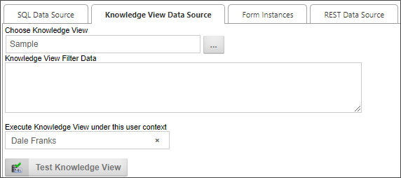
A Content Picker control that enables you to pick the Knowledge View from which the data will be extracted.
If the Business Value (and underlying Knowledge View) uses a filter Parameter, the Parameter has to be passed to the Knowledge View as a filter string, using the same format you would use to pass filter strings from a Knowledge View control on a Form, e.g.:
KViewFilter1={PARAMETER:Parameter1Name}.
If you are passing more than one filter parameter, then each parameter passed should be on its own line in the Knowledge View Filter Data text box, e.g.:
KViewFilter1={PARAMETER:Parameter1Name}
KViewFilter2={PARAMETER:Parameter2Name}
A User Picker control that enables you to pick the user under whose permissions the Knowledge View will be run. Since regular users may not have permissions to view the Knowledge view, you must pick a user who has appropriate permissions to run the Knowledge View. This will enable users with a lower permissions level to access the Knowledge View data for the Business value.
Clicking this button will run the Knowledge View to confirm that it works properly.
For users of Process Director v5.13 and higher, Business Values may also use Form Instances as data sources, to retrieve a list of form instances, or form field values. This tab will not appear in earlier versions of the product. For users of Process 5.26 and higher, the Form Instances data source will not return canceled or incomplete form instances, but it will return form instances that were saved for later, or attached to a process.
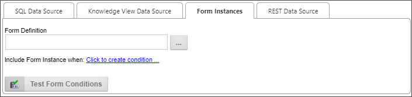
An Object Picker control that enables you to select the form definition whose instances will be retrieved.
This property will use the Condition Builder to enable you to filter the Business Value to return only form instances that match the specified condition.
This button will, when form conditions have been configured, display the number of form instances that match the configured condition.
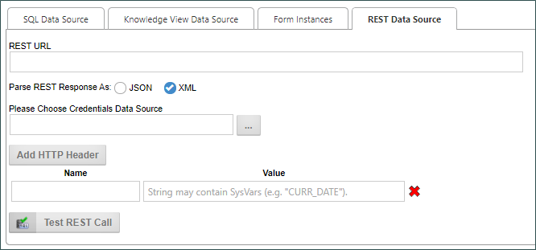
The Rest Data Source tab enables you to type a URL for a REST data source into the REST URL text box.
The Parse REST Response As property enables you to choose how Process Director will parse the REST Response. By default. Process Director will parse both JSON and XML responses as XML, enabling you to use XPath to parse the response. Some JSON, however, can't be converted to XML. In that case, parsing using JSONPath will be required. For Process Director v5.25 and higher, Business Values that use JSONPath to target data from a REST call can use expressions that return a JSON node rather than a string or scalar value.
The Please Choose Credentials Data Source property enables you to select a Compliance data source that contains the credentials needed to authenticate with the REST service that supplies the data.
Users of Process Director v4.42 and higher also have an Add HTTP Header button that, when clicked, will add one or more rows of Name/Value pairs that will be sent via HTTP header to the REST service.
The Test REST Call button will run the Web Service REST call to confirm that it works properly.
XPath queries can be used against REST data in Business Values, so that business value properties can be assigned values returned in the XML response to the query. For instance, let's say you have a REST call to return Zip Codes from a particular city and state, and REST response returned the following XML data:
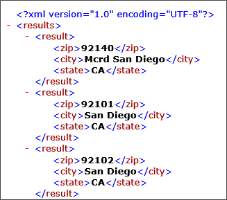
Using the XPath syntax "results/result/zip", you could return a list of the zip codes as a data column in the Business Value, as shown below:
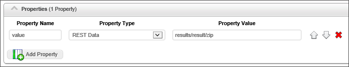
Business Values also support JSON returns and JSONPath, as well.Once you have selected the appropriate data source for the Business Value from the configuration tabs, you can fill out this section by adding the properties that contain the desired Business Value or Values. Simply click the Add Property button to add a value property. The value property contains a number of fields that must be configured.
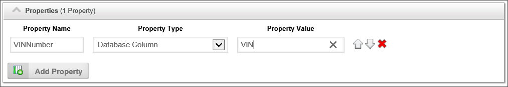
| Property | Options | Description |
|---|---|---|
| Property Name | The property name will appear as the Business Value property when selecting Business Values from the Condition Builder dropdown menus. | |
| Property Type |
Database Column |
The type of object from which the value is extracted. |
| Property Value (Fields) | List of available fields |
This dropdown control appears when the Database Column, Form Field, or Knowledge View Column Property Type is selected. For the Database Column, the field will appear as a text box into which you can type the desired database column name. For the Form Field, a Content Picker will be displayed that you can use to select the form field to use for the property. For the Knowledge View Column data type, it will be displayed as a dropdown containing a list of Knowledge View columns from which you can select the desired column containing the value. |
| Property Value (Operators) |
Column Data Max From First KVIew Result From Last KView Result |
The type of calculation desired to produce the value. Selecting Column Data provides the raw value of each row, which will result in a multi-row Business Value. The remaining calculation operators will produce a single value, such as a Sum or Average of all values in the returned rows. Additionally, If the Data Source is a Knowledge View you can return the first or the last record in the Knowledge View as a scalar (single) value. This is primarily useful when the Knowledge View results are sorted in the knowledge view definition. |
The Form Field and Form Instance data types are only available for users of Process Director v5.12.02 and higher.The properties returned can be ordered by using the UP and Down arrow icons, and deleted by clicking the red "X" icon.

Each property can be accessed in the condition builder via the value dropdown menu.
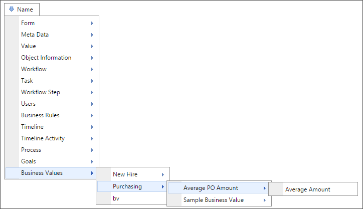
The Parameters section enables you to add Parameters to your queries, and in the case of Business Values based on SQL Datasources, supply a test value to apply when the query is tested.
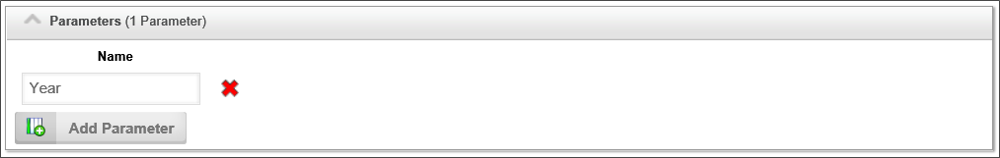
For Process Director v5.26 and higher, Parameters can also be used as column values in both the SQL statement, and the Parameter as a Property Value. For instance, A SQL statement such as "SELECT {$PARAMETER:column} from TABLENAME" can be used to return a column for a Property that uses"{PARAMETER:column}" as the Property Value. Thus, the Parameter can supply the column name for both the SQL Statement and be used as the value of the Property itself. Please note that the Property Name must still be a static value. Similarly, System Variables may be used in the Property values for REST data sources. This enables users to build parameterized filter expressions that can be used to filter the JSONPath/XPath results, e.g.:$.components[?(@.classification >= /Graded/I && @.section = {$PARM:section})].sectionThe Name column enables you to specify a parameter name.
The Test Value column will only display when the SQL Data Source tab is selected, as only the SQL Datasource supports passing test values to the SQL command. In this column, type the test value you'd like to use when testing the query. Once you've entered a test parameter, you can click the Test Query button on the SQL Data Source tab to test the query with the test parameters you entered.
Note that, in the example above, the SQL statement uses the parameter in the WHERE clause, with the syntax {$Parameter:Year}. The "$" in the system variable instructs Process Director to format the parameter value as a SQL-encoded string.
Click this button to add a new parameter.
Once you have added parameters to a query, every place where you choose the Business Value from the Choose System Variable dialog box, the parameter will display in in its own section of the dialog, below the Business Value you select. You can use the parameter portion to select from where the parameter’s value will be derived.
For instance, let's say there's a Form that has a VendorName dropdown control for picking a vendor, which uses the Vendor's name as the display text, and the VendorID as the value. Using the Business Value, you can automatically fill one or more fields with the Vendor's company information by using the VendorName field as the Vendor parameter, and passing the parameter to the Business Value.
In this example, the Set Form Data tab on the Form is configured to set the value of several form fields when the VendorName changes.
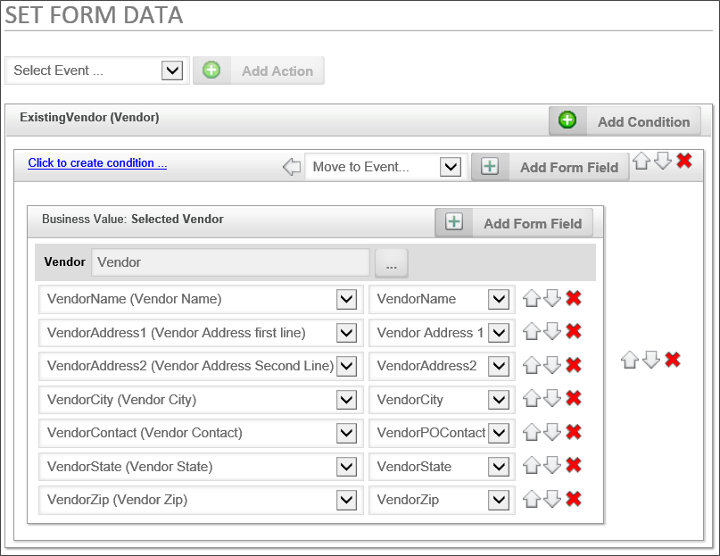
If we click on the Build button of the Type property to open the Choose System Variable dialog, we can see the parameter has been set to the value of the ExistingVendor field.
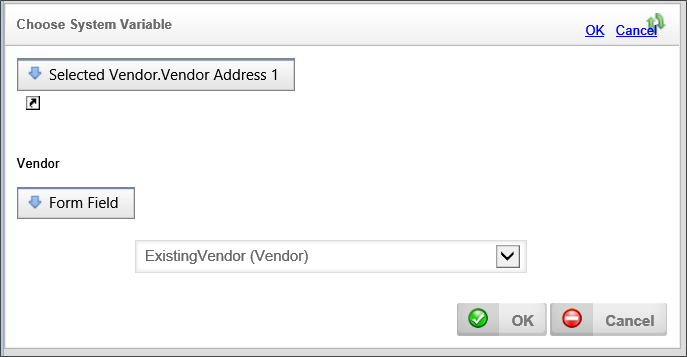
The Type property is identified in the Dropdown menu, and, below the dropdown, we set the "CustomerID" parameter to the value of the CompanyName form field. In this case, the Business Value will return the Customer Type for that specific customer.
In this simple example, we are only returning the Customer Type from the database. We could, however, return any other type of needed information, such as the address, point of contact, phone number, etc., as part of the Business Value as well.
Once a Business Value has been created, it can be selected as a content type from the Content Picker control when creating Form templates.
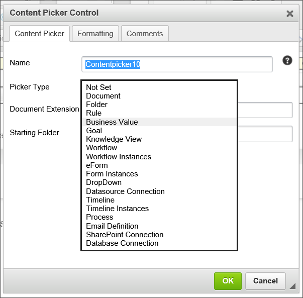
Business Values can also be accessed through a System Variable. For an example of using a system variable with a parameter, take a look at the following Business Value configuration for a notional Business Value named "CustomerInfo":
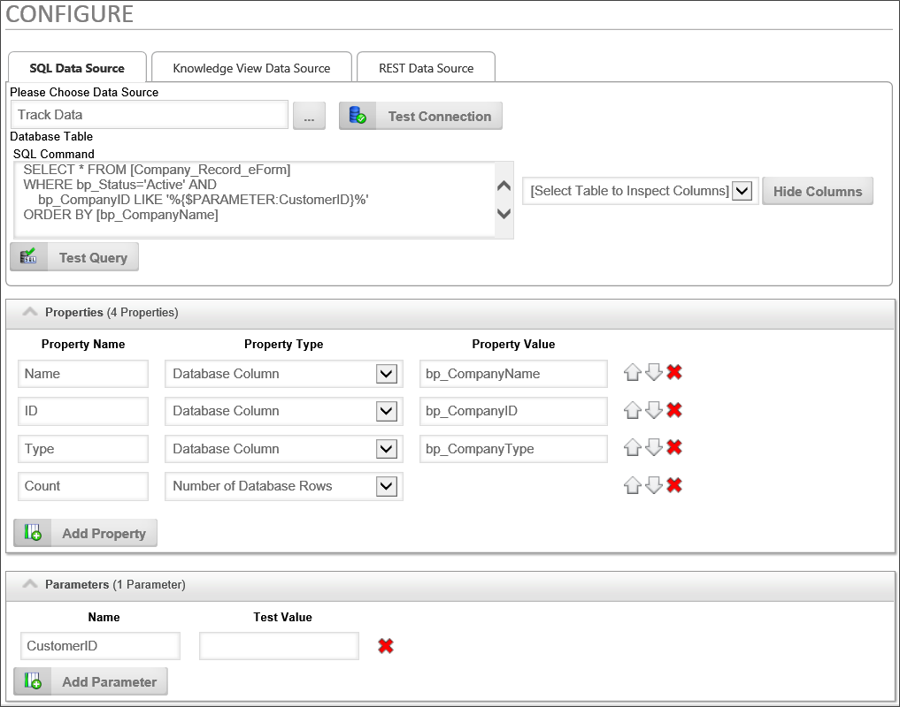
So, in this example, let's say we want to return the Name property for the customer whose Customer ID is "123" via a system variable. In that case, we could use the following syntax:
{BUSINESS_VALUE:CustomerInfo.Name, $CustomerID=123}
Please see the documentation on Business Value System Variables for more information.